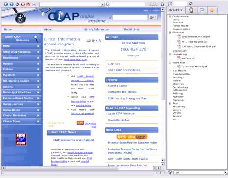

The Library

The library, accessed from
The side bar of EasyGP
The central area of the library will be occupied by whatever type of document
you are viewing.
In the image above, an embedded web browser is showing the NSW Ciap site.
The library will read the file extension of whatever file you select and choose
the appropriate display tool, be it web-browser, pdf, text, or image viewer.
The libary is divided into four basic subsections which you may read about in the
following sections
- My Libary
- Handouts
- Internet Resources
- Favorites